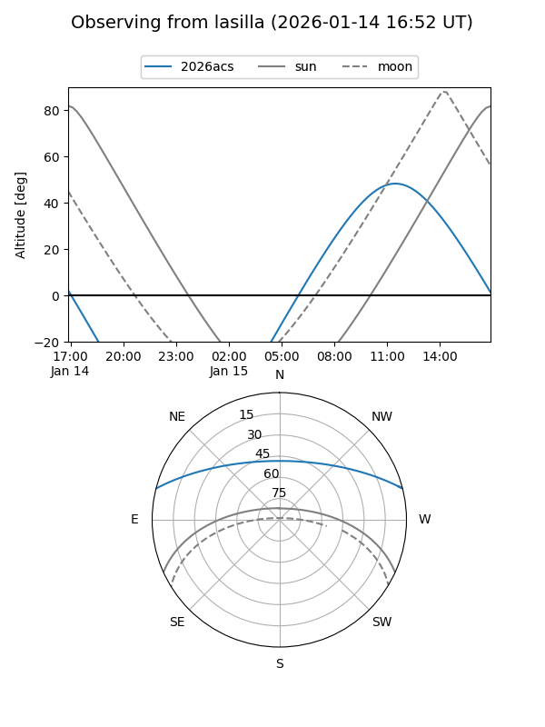
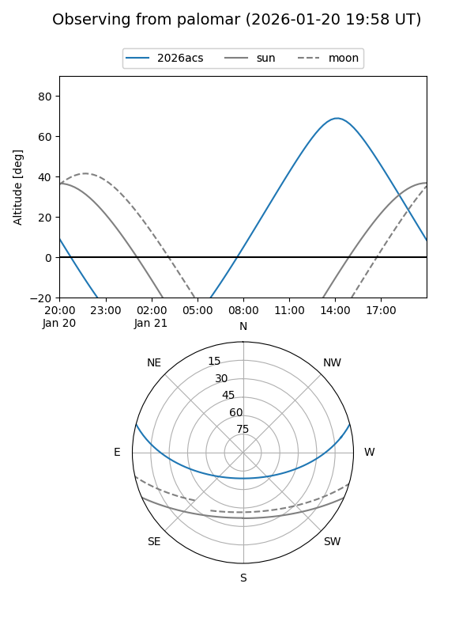
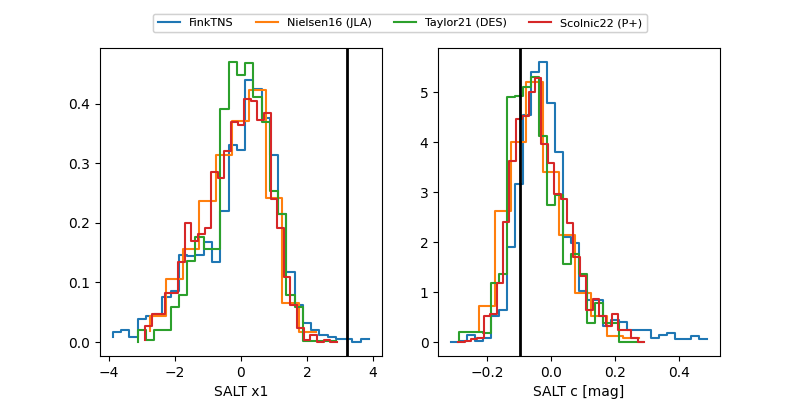

2026acs
Target 2026acs at 2026-01-16 12:55
Aliases and brokers:
FINK: link
Lasair: link
ALeRCE: link
TNS: link
YSE: link
alt names
ZTF26aabddtt (ztf,fink_ztf)
2026acs (tns,yse)
Coordinates:
equatorial (ra, dec) = 215.8121,+12.50057
equatorial (HMS+DMS) = 14:23:14.90,+12:30:02.06
galactic (l, b) = (3.2172,+64.00016)
Flags:
Photometry:
last ztfg=19.91, ztfr=20.05
1 ztfg, 1 ztfr detections
Lightcurve

Visibility


Additional plots
